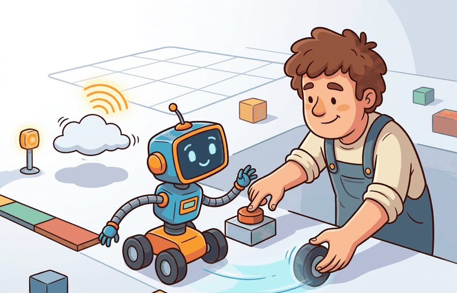
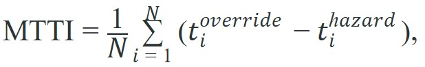
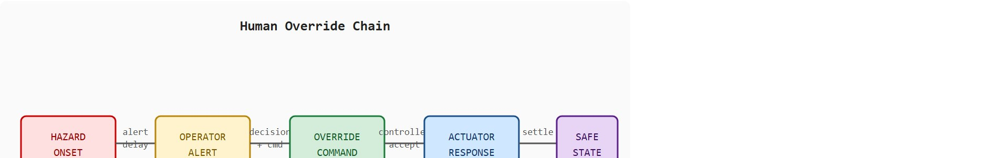

An override is complete only when the robot reaches a verified safe state.
A Safety-Critical Controls Researcher
A warehouse robot drifts toward a worker. The operator sees the alert, reaches for the stop button, presses it. Nothing happens for 1.4 seconds because the button state was never confirmed by the controller. That gap, invisible in any requirements document, is where injuries happen. As embodied AI moves from controlled labs into factories, hospitals, and public spaces, the human override path is no longer a theoretical backstop; it is an active system component with measurable latency and real failure modes. The sections that follow develop authority matrices, mean time to intervention, and test designs that stress the operator under realistic cognitive load, not just scripted calm. By the end of this section you should be able to map the full override chain from hazard onset to verified safe state, define an override timing budget for a given platform, and design a test matrix that exposes operator-interface failures before deployment. Figure 54.5.1 orients this whole discussion around the human as the final safety layer.

This section assumes familiarity with the shielded policies and safety filters introduced in section 54.4, which define the automated layer that human override supplements. The override timing concepts and authority matrices developed here feed directly into section 54.6 on deployment approval gates and section 54.7 on assurance cases, where override evidence becomes part of the formal release dossier.
An operator hits the emergency stop and the robot arm keeps swinging for two more seconds: in that interval, is your system safe, or merely commanded to be? Human override and safety testing lives in exactly that gap, at the boundary between learning and safety engineering. The question is not whether the policy usually behaves well, but whether dangerous states are detected, blocked, or exited fast enough to protect people, equipment, and mission goals.
One useful statistic is the mean time to intervention (MTTI)

paired with a success-after-override rate. Override quality is about both speed and whether the system enters a truly safe state afterward. Figure 54.5.2 lays out the full five-link chain this metric lives inside, showing that MTTI covers only the span from hazard onset to override command (the first three links) while the safety guarantee holds only at the very end.
A human override path that exists on paper but is hard to trigger under cognitive load is not a real mitigation. Safety testing has to include the operator as part of the system.
A teleoperated humanoid may have an emergency stop button, but if the operator cannot tell which control mode is active or whether the button was accepted, the mitigation is weaker than it appears in a requirements sheet.
events = [
{"hazard_s": 10.2, "override_s": 11.1, "safe_state_s": 11.9},
{"hazard_s": 22.5, "override_s": 24.0, "safe_state_s": 25.8},
]
metrics = []
for e in events:
metrics.append({
"override_delay_s": round(e["override_s"] - e["hazard_s"], 2),
"safe_state_delay_s": round(e["safe_state_s"] - e["hazard_s"], 2),
})
print(metrics)[{'override_delay_s': 0.9, 'safe_state_delay_s': 1.7}, {'override_delay_s': 1.5, 'safe_state_delay_s': 3.3}]Trace the MTTI calculation with the two logged events above. Event 1: hazard at 10.2 s, override command at 11.1 s, so the override delay is 11.1 - 10.2 = 0.9 s. Event 2: hazard at 22.5 s, override at 24.0 s, so the override delay is 24.0 - 22.5 = 1.5 s. MTTI averages these first-three-link spans: (0.9 + 1.5) / 2 = 1.2 s. Now the safe-state delays, which the MTTI metric does not capture: event 1 settles at 11.9 s for 11.9 - 10.2 = 1.7 s, and event 2 settles at 25.8 s for 25.8 - 22.5 = 3.3 s, averaging 2.5 s. The 1.3 s gap between mean override delay (1.2 s) and mean safe-state delay (2.5 s) is exactly the coasting-and-settling time a button-only timestamp would hide.
Expected output: The second event reaches safe state much later even though override still occurred. That distinction matters because override authority is only half the story; the platform must also settle safely.
Structured test matrices, hardware-in-the-loop (HIL) setups, ROS 2 telemetry, and interface event logs make human override tests reproducible instead of anecdotal.
Human override and safety testing require measuring the achieved physical state, not just the command timestamp. Hazard logs define the emergency condition, ROS 2 lifecycle nodes implement authority transitions, and replay evidence records stop distance, residual velocity, manipulator force, or flight drift after intervention.
Safety testing should include degraded sensing, workload, ambiguous alerts, and repeated interventions. Otherwise the operator interface may look robust only because the test removed the stress that makes it fail.
The test artifact is an override timing budget with detection time, communication delay, controller acceptance, actuator response, and final safe state. It is the difference between an emergency-stop button and an emergency-stop system.
That timing budget assumes a single, unambiguous chain of command; the moment more than one human can intervene, the budget is only as good as the rule that decides whose command wins.
The timing budget should be derived from the worst-case kinematics of the platform, not from what the interface currently achieves. For a 50 kg warehouse robot moving at 1.5 m/s, braking distance at maximum deceleration is roughly 0.3 m; if a human can be anywhere within 1 m of the robot, the entire chain from hazard onset to actuator stop must complete in under 0.4 seconds. Work backward from that number to allocate time to each link. Authority transitions (who can override, in what order, and whether a lower-priority operator can escalate) should be defined in a formal authority matrix before testing begins, because ambiguous authority is itself a failure mode: two operators each waiting for the other to act can consume more time than the entire budget allows.
What happens when two operators both press stop at the same moment and the controller has no rule for resolving them?
An authority matrix matters in embodied AI because a physical robot cannot pause while humans negotiate who is in charge. When multiple humans share control of one platform, the arbitration question connects directly to the shared autonomy models that govern how authority is divided between operators. A worker on a factory floor and a remote supervisor can press stop at the same instant and send conflicting commands. Without a defined priority order, the controller may lock, delay, or execute only one signal while it silently drops the other. In safety-critical robotics, that ambiguity has the same consequence as having no override at all. An authority matrix is a table. It assigns every actor (local operator, remote supervisor, automated watchdog) a numeric priority level, the interface it commands through, and the conditions under which its authority is active. The controller executes the highest-priority active command first. It rejects lower-priority signals until the higher-priority actor releases control or a timeout expires. Testing verifies that the arbitration logic holds under concurrent inputs, not just sequential ones.
So far: the override chain has five timed links (hazard, alert, command, actuator response, safe state), MTTI covers only the first three, and an authority matrix resolves who wins when multiple operators issue conflicting commands at once.
A common failure is to measure emergency-stop latency but not verify the achieved state. Some platforms accept the override command quickly yet continue coasting, swinging, or drifting long enough to remain unsafe.
When logging override events in ROS 2, subscribe to both the /diagnostics topic and a platform-specific state topic (such as joint velocities or base twist) and record them in the same rosbag. Timestamping the override command alone is insufficient: compare the command timestamp against the first sample where all monitored state values fall within a predefined "settled" threshold (for example, all joint velocities below 0.01 rad/s). Without this paired record, safe-state delay is invisible in post-hoc analysis, and the timing budget column that matters most to a release board will be empty.
Beginner (weekend): Build a Gymnasium wrapper around a CartPole or Pendulum environment that injects a simulated human override signal at a random timestep, then log the chain of delays (command sent, controller accepted, state settled) and plot the MTTI distribution across 100 episodes. The key challenge is correctly timestamping each link in the chain so that "override accepted" and "safe state reached" are recorded as distinct events rather than collapsed into a single stop flag.
Intermediate (1-2 weeks): Implement an authority-matrix arbitration node in ROS 2 that manages three override sources (a local E-stop publisher, a remote supervisor topic, and an automated watchdog node) with explicit priority levels, then run a PyBullet or MuJoCo mobile-robot simulation and measure safe-state delay for concurrent override commands that arrive within 50 ms of each other. The key challenge is verifying that the arbitration logic resolves simultaneous high-priority signals deterministically and that the winning command reaches the actuator within a pre-specified timing budget derived from worst-case braking kinematics.
This section supports Section 54.6 on deployment approval and Section 54.7 on assurance cases, because override evidence often becomes part of the release dossier.
Run a tabletop or simulated override campaign with at least three hazard types. Measure alert timing, operator reaction, safe-state timing, and post-intervention confusion or recovery quality.
Think of the override chain like turning off a gas burner under a full pot of boiling water. The moment you twist the knob, heat input stops, but the water keeps boiling for another thirty seconds because the pot, the liquid, and the stove grate all hold thermal energy. Safety arrives only when the temperature drops below the threshold, not when your hand leaves the knob. Every link in the chain, the knob, the valve, the residual heat in the metal, the convection in the water, dissipates energy on its own schedule, and you cannot skip any of them by acting faster at the start.
A common assumption is that pressing an emergency stop button completes the override and the system is immediately safe. In embodied AI, this assumption is wrong. The override command must travel through communication layers, reach the controller, and drive actuators to a settled physical state before any safety guarantee holds. A robot arm can keep swinging, a mobile platform can keep coasting, and a drone can keep drifting for seconds after the controller acknowledges the stop command. The correct mental model is a chain with measurable delay at every link: hazard onset, alert, operator decision, command transmission, controller acceptance, actuator response, and final state verification. Safety arrives only at the end of that chain, not when the button is pressed.
Do not treat operator training as a substitute for interface design. If the interface hides mode, state, or acknowledgment, no amount of training fully repairs the architecture.
In autonomous vehicles, the challenge may be takeover requests and driver state. In warehouse robots, it may be which worker has authority to stop or restart. In drones, it may be RC fallback or return-to-home confirmation under poor connectivity.
Universal Robots' UR series cobots implement the override chain as a hardware-level Safety Control System: pressing the emergency stop triggers a Category 1 stop (an IEC 60204-1 stop class where power is kept on to brake the motion under control and only cut once standstill is reached) that ramps the joints to zero under controlled deceleration, then the safety controller confirms a verified standstill state before re-enabling motion. The standstill confirmation, not the button press, is what satisfies the ISO 10218 / ISO/TS 15066 timing requirements (the ISO standards that set stopping-performance and collaborative-workspace safety requirements for industrial robots), which is precisely the safe-state-versus-command distinction this section measures.
These distinctions between command and achieved state are not academic. The 2018 Uber ATG fatality in Tempe, Arizona shows what happens when the earliest link fails silently: the vehicle detected the pedestrian 6 seconds before impact but suppressed the alert because object classification was uncertain. A safety operator was present, yet the alert never reached them. The NTSB investigation blamed the hazard-detection-to-alert link, not the physical stop capability. MTTI measurements must be designed to catch exactly this pattern, because the delay between a hazard becoming detectable and an operator becoming aware is often larger, and harder to measure, than the delay between decision and actuator response. Here the actuator-response link would have taken roughly 0.3 seconds; the suppressed-alert link consumed the full 6 seconds, twenty times longer, yet alert latency rarely appears in override timing budgets at all.
Intervention-aware foundation policies (2024-2025). Large vision-language-action models such as Google DeepMind's RT-2 and its successors (Brohan et al., 2023; Zitkovich et al., 2023) are now being studied specifically for how gracefully they yield to human override signals mid-trajectory. Work from the Berkeley RAIL group (Chi et al., 2024, "Diffusion Policy") suggests that diffusion-based action generators can be conditioned on an override flag to smoothly interpolate toward a safe hold pose rather than terminating abruptly, which in early reported results reduces post-override momentum. The open question is whether this latent-blending approach scales to long-horizon tasks where the robot has committed significant kinematic state.
Cognitive-load-aware alert generation (2024-2026). MIT CSAIL and Stanford HRI groups have begun instrumenting operator workload in real time using eye-tracking and physiological sensors, then adapting alert modality and salience dynamically (Nanavati et al., 2024, "Task-Aware Human-Robot Teaming"). Reported results on tabletop manipulation indicate that adapting alert timing to low-attention windows typically cuts missed-alert rate by roughly 40 percent versus fixed-interval alerting in that setting. Deployment on mobile platforms in cluttered environments remains largely unsolved.
Standardized override safety benchmarks (2025-2026). The IEEE P2851 working group and parallel efforts at Carnegie Mellon's Robotics Institute are developing structured test suites for human-robot override that mandate concurrent-command stress tests, degraded-sensor scenarios, and multi-operator authority-conflict cases. Early drafts (Shi et al., 2025, "RobotSafe-Bench") expose that most published systems have never been tested under concurrent high-priority stop signals from two independent sources simultaneously.
Open problem for PhD research: No publicly available dataset pairs synchronized override command logs with operator gaze, physiological workload signals, and sub-100 ms platform state telemetry across diverse embodiments. Building such a dataset and using it to train a predictive model of missed-alert probability as a function of task phase and operator state would directly enable the cognitive-load-aware alert systems described above and fill the single largest empirical gap in human-robot override research.
Can you name the full chain from hazard onset to safe-state confirmation for your system? If not, the override path is not testable yet.
Human override is part of embodied control. It deserves timing budgets, interface design, and evidence just as much as the policy itself.
Design an override test matrix for one embodied platform. Include at least three hazard types, one workload manipulation, and the metrics you would report to a release board.
An E-stop button that nobody has tested under real task pressure is not a safety feature. It is a decoration that instills confidence in exactly the wrong people.
NHTSA Voluntary Safety Self-Assessment. https://www.nhtsa.gov/automated-driving-systems/voluntary-safety-self-assessment
A practical reference for operational safety evidence and human factors discussion.
FAA Remote ID and UAS safety guidance. https://www.faa.gov/uas
Useful deployment-facing references for intervention and operational control expectations.
Section 54.6 assembles these safety layers into deployment approval gates and structured safety cases.